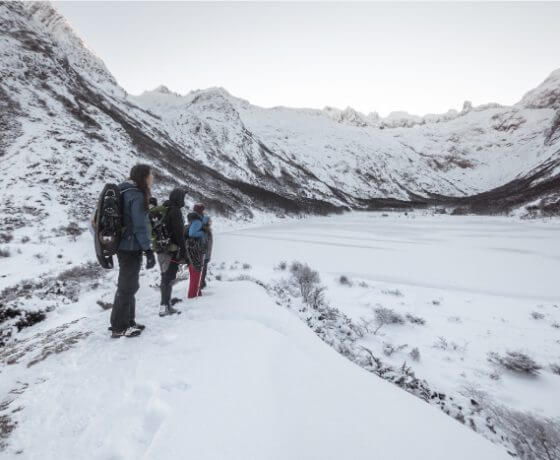
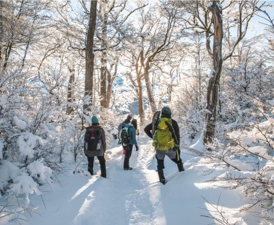

Esmeralda en invierno
A 20 km de distancia de la ciudad se encuentra el comienzo de esta senda que nos llevará a la Laguna Esmeralda. En la época invernal se congela y luego se cubre toda de nieve. Según las condiciones del camino se elegirá si utilizar raquetas para caminar sobre la nieve y no hundirse o crampones para caminar sobre superficies que tengan hielo.El camino a la laguna Esmeralda ofrece innumerables vistas panorámicas y se llega a ella luego de una caminata de 4,5 km, casi 2 horas de caminata a un ritmo de paseo. Iremos bordeando el río Esmeralda y llegaremos al hermoso espejo de agua glacial que se encuentra en la época invernal congelado y cubierto de nieve.



